有一群躲躲闪闪的隐身人，他们把身体藏起来不让别人看见，只肯半遮半掩，在图中露出一条腿来。数数看，在图中共能看到多少条腿？
在图12中能看到8条腿？
有8条腿一眼就能看到，但是总数不止8条。再仔细看看。
已经看见的8条腿上穿着黑长裤，脚下蹬着黑皮鞋。
还有呢，还有……有了！在每两条相邻黑腿之间，有一条白颜色的腿，穿着白袜、白裙、白色高跟皮鞋。这样的腿也有8条，总数是16条腿。
图13现在你已经掌握了图12的秘密。再看一幅新图。
在图13中，每一位隐身人只露出头的一部分来。数数看，图中能看到几个人？
在图中能看到一位眯细眼睛自我陶醉的妇女？
完全正确。还有呢？
一位凝视前方认真思考的男孩？
说得对。还有呢？
找呀找呀，这里找到一位！这里躲着一位！这里还有一位！这里还……
这幅图占的地方虽小，里面的人物还真不少。男女老少，眉开眼笑，共有10位，你把他们全找出来了吗？
如果你已经把图中的“隐身人”全部找了出来，不妨拿这些图去考考你的家里人和你的朋友，让他们分享快乐。
数一数共有多少个，可算是最简单的算术问题。最简单的问题怎么会这样有趣呢？有一首短诗，专讲其中的奥妙：
题目貌似简单，暗藏小小机关。
脑筋稍稍转弯，原来如此这般！
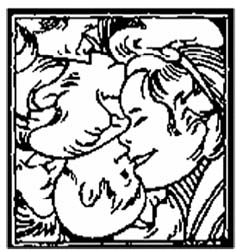
七巧板是中国民间流传的一种拼图游戏，起源于宋代，后来传到欧、美、日本等许多国家，又叫做“七巧图”、“智慧板”、“流行的中国拼板游戏”、“中国解谜”等。
找一张硬纸片，按照图14的尺寸比例画在硬纸上，然后沿着画的线剪开，得到七块小板，就做成一副七巧板了。图的尺寸比例很容易掌握，只要先画一个正方形边框，然后反复取中点、连结线段，就能画出整个图来。
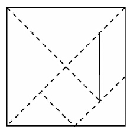
用一副七巧板可以拼出许许多多各种各样的图形，包括人物、动物、植物、生活用品、建筑、汉字、数字和西文字母等，有记载的图形数目已经超过1000个。通常是在拼成图形以后，把外围轮廓描下来，里面全部涂黑，看不出拼接的痕迹，让别人去重新尝试用七巧板拼成这样的图形。所以玩七巧板也像猜谜语一样，需要善于分析，头脑灵活，是一种益智游戏。
如果把七巧板的七块小板涂上不同的颜色，拼成的图形就带有更浓厚的装饰性。目前全国通用的九年义务教育六年制小学教科书《数学》，各册封底所印的彩图就是用彩色七巧板拼成的房屋、猫、人物等有趣图形。
现在有两个关于七巧板的小小计算问题。
第一题是：如果一副七巧板的总面积是16，那么其中每一块的面积各是多少？
答案很容易算出：七块小板的面积分别是4，4，2，2，2，1，1。
容易看出，用七巧板中两块面积为1的小板可以拼成任何一块面积为2的小板；用其中任何一块面积为2的小板和两块面积为1的小板可以拼成一块面积为4的小板。
做第二个问题之前，先看图15所示的七巧板人物造型。图中的三个人，一个在溜冰，一个在踢球，还有一个在跳舞蹈，各有各的乐趣。这三个七巧板人物的头部面积与全身面积的比各是多少？
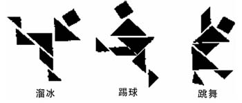
因为图中表现人物头部的是一块正方形小板，面积为2；而每个人物图形都是由一副七巧板拼成的，七块小板面积的总和是16。所以在每个人物图中，头部面积与全身面积的比都是1∶8。
美术课里讲到，一个成年男子的头部高度与全身高度的比大约是1∶7.5。由此看来，画到纸上，如果全身所占面积是头部所占面积的8倍左右，看上去就比较匀称。怪不得七巧板人物那样生动，原来比例匀称帮了大忙呢！
小明和小亮玩扑克牌，发明了一个新花样，叫做“三件套”。人多能玩，人少也能玩，一个人同样能玩。
玩的规则很简单。首先像平常一样每人轮流取牌，取满5张后停止。这时各人开始研究自己手里牌的点数。A算1点，J算11点，Q算12点，K算13点，正、副司令可以根据需要，算成任何一个确定的点数。
如果发现手中有某3张牌的点数能通过适当的运算组成一个等式，这3张牌就构成一个3分组。有时5张牌里会有好几个3分组，有时一个也没有。
类似地，如果发现手中有某4张牌的点数能通过适当的运算组成一个等式，这4张牌就构成一个4分组。
如果发现手中全部5张牌的点数能通过适当的运算组成一个等式，这5张牌就构成一个5分组。
如果谁的手里，3分组、4分组、5分组品种齐全，就配成一副“三件套”，可以挑战，亮出自己的牌，宣布成功，并且统计得分：每个3分组得3分，每个4分组得4分，5分组得5分。
例如，小明发动挑战，亮出的牌如图16。
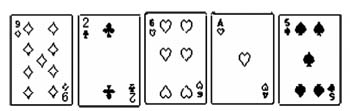
在小明的这副牌里，有1个3分组（1，5，6），相应的等式是1+5=6。
有5个4分组：（1，2，5，6），（1，2，5，9），（1，2，6，9），（2，5，6，9），（1，5，6，9），相应的等式分别是：
1+6=2+5
1+9=2×5
1+2+6=9
2+9=5+6
6+9=15
全部5张牌还成为一个5分组，相应的等式是（1+2）×5=6+9。
所以，小明的挑战分数是3+4×5+5=28。
一个人挑战以后，其他人也都相继亮牌查看。还没有配齐“三件套”的，这一盘的得分是0分。已经配齐的，就可以应战。例如，小亮的牌也配齐了，如图17：
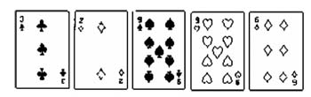
在小亮的这副牌里，有3个3分组：（2，3，6），（3，6，9），（2，3，9）。相应的等式是：
2×3=6
3+6=9
32=9
有4个4分组：（2，3，6，9），（2，3，9，9），（2，6，9，9），（3，6，9，9）。相应的等式是：
2×6=3+9
（3-2）×9=9
（9-6）2 =9
3×6=9+9
全部5张牌成为一个5分组，相应的等式是：
（3+6）×2=9+9
所以，小亮的总分是：
3×3+4×4+5=30
比赛结果是：挑战者小明28分，应战者小亮30分，分数最高的人胜利。
记分规则是：胜利者的分数加倍，其他人记实际成绩。所以在这一盘中，小明得28分，小亮得60分。
如果大家手中的牌都没有配齐，可以按原顺序轮流补牌换牌，保持手里有5张牌，直到有人挑战为止。
同一个分数组的各数之间，有时能组成几个不同等式，这时只要说出其中任何一个等式就行，按组计分。
把1副扑克放在桌子上（54张），甲、乙两人依次从上面拿牌。规定每次最少拿1张，最多拿5张，不准多拿，也不准不拿，谁能最后把牌拿光，谁为胜。
这种游戏看起来很简单，但它是一个有趣的数学问题，只有掌握规律，才能保证你取胜。
试想：如果最后剩下6张牌的时候，谁后拿，谁就一定能取胜。因为先拿的不能不拿，也不能拿光，而他不管拿几张，剩下的总少于5张，因此后拿的总能一次拿完而取胜，所以要想取胜，你就要想办法，经过若干次拿牌后，给对方剩下6张牌，你就稳操胜券了。
怎么能给对方剩下6张牌呢？因为54能被6整除（54÷6=9），所以你要取胜，就要让对方先拿。不管对方拿几张，你一定和他凑成6张。比如对方拿1张，你就拿5张；对方拿2张，你就拿4张……对方拿5张，你就拿1张。这样每人拿8次后，共拿走6×8=48（张），一定是剩下6张让对方先拿。你就一定胜利了。
记住这个规律，找个小朋友试一试。
想一想，如果把这个游戏改为每次最少拿1张，最多拿4张，那么应该怎么拿？是先拿的人取胜？还是后拿的人取胜？
一张纸总有正反两面。我们把一张狭长的白纸条的反面涂以黑色，并在正反两面的中央各画一根直线，然后把纸条的两端用浆糊粘合起来，使白色的一面都向外面。这样做成的纸圈，外面是白色，里面是黑色。
如果捉一个蚂蚁放在白色的一面爬行，不许越过边线，那么，这个蚂蚁爬来爬去，总是在白色的一面。相反地，如果把这个蚂蚁放在黑色的一面上，那么，它就只能老是在黑的一面上爬行了。
现在我们另外用一条同样的纸条，反面也涂以黑色，不过，在粘合两端时，把其中的一端翻一个身，使黑的一面向外与另一端白色一面粘合起来。
那么，这个纸圈就分不出里外圈和正反面了，如果捉一只蚂蚁，让它自由爬行，它可以不过边线，就能到达黑白两面所有的地方。换句语说，这个纸圈变成只有一面了。
不仅如此，这个纸圈还有一个奇怪的特点。假若沿这个纸圈中间的一根线剪开，并不会一分为二，而是成为一个较长的纸圈。如果再沿这个长的纸圈中间剪开，就成为两个互相联串的纸圈。不信，你可以试试看，这是一个很有趣的事实。
“俄罗斯方块”是一种关于拼图的智力游戏，玩过掌上游戏机或小霸王游戏机的人，大多玩过俄罗斯方块。
玩这种游戏时，从长方形屏幕的顶部，每过一小段时间就自动抛下来一个积木块，形状如图18所示七种中的任意一种，可能事先旋转了90度、180度或270度。玩的人通过按键，在积木块往下掉的过程中将它旋转或左右移动，使得落在屏幕底部的积木块尽可能整整齐齐地排满一行或几行，不留空隙。每当一行排满或几行同时排满，这些行就会自动从屏幕上消失，同时得分也就增加了。
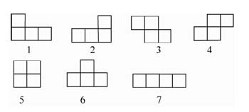
以大众化游戏为背景的竞赛题自然也很有趣。下面是两道以俄罗斯方块为背景的小学数学竞赛题。
问题1（填空题）：用方格纸剪成面积是4的图形，其形状只能有图18所示的七种。
如果只用其中的一种图形拼成面积是16的正方形，那么可用的图形共有（ ）种。
本题的答案是：只有图18中的1号、2号、5号、6号图19和7号图形满足条件。其中只用6号图形拼成面积为16的正方形的方法见图19，其余几种的拼法都很容易。所以可用的图形共有5种。
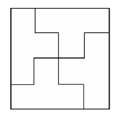
问题2（填空题）：用方格纸剪成面积是4的图形，其形状只能有图18所示的七种。
如果用其中的四种拼成一个面积是16的正方形，那么这四种图形编号之和的最小值是（ ）。
因为总面积是16，每一小块的面积是4，所以必须用4块拼成。题目要求用4种图形，可见每块图形的形状各不相同。只有三种可能的搭配方法，见图20。
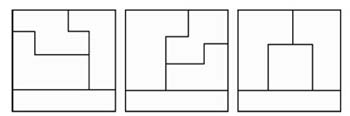
这三种方法所用图形的编号分别是：
1，2，3，7
1，2，4，7
1，2，5，7
所用四种图形编号之和的最小值是：1+2+3+7=13。
数学课外活动小组上，王老师提出这样一个问题：假设有一张圆桌和足够的五分钱硬币，甲、乙两同学轮流往桌面上摆硬币，规则是任何两枚硬币不能重叠。谁放完一枚硬币而使对方无法再往桌面上放硬币时，谁为胜利者。
许多同学都说，老师提出的问题没说桌面多大，因此这种比赛无法进行。而小明想了一会儿说：“王老师，不管桌面有多大，只要让我先放，我一定能胜利。”然后他讲了自己取胜的道理。
因为圆形是中心对称图形，所以我首先在圆心上放一枚硬币，然后不管对方在什么地方放硬币，我都在其关于圆心的对称点上放。这样，只要对方能找到一个放硬币的地方，我就一定能找到它与圆心对称的地方放，直到对方找不到放硬币的地方为止。这样我就胜利了。
有些游戏就是怪。看来能猜中的偏偏猜不中。看来猜不中的偏偏猜得中。
不信，各讲一个给你听。
小牛和小马、小羊在一起做游戏，小牛用两小张纸，各写一个数。这两个数都是正整数，相差是1；他把一张纸贴在小马额头上，另一张贴在小羊额头上。于是，两个人只能看见对方头上的数。
小牛不断地问他们，你们谁能猜到自己头上的数吗？
小马说：我猜不到；
小羊说：我也猜不到。
小马又说：我还是猜不到；
小羊又说：我也猜不到。
小马仍然猜不到。
小羊仍然猜不到。
小马和小羊都已经三次猜不到了。
可是，到了第四次，小马喊起来：我知道了！小羊也喊道：我也知道了！
请你想想，他们头上是什么数？怎么猜到的？
原来，“猜不到”这句话里，包含了一个重要的信息。
要是小羊头上是1，小马当然知道自己头上是2。小马第一次说“猜不到”，就等于告诉小羊，你头上的数不是1！
这里，要是小马头上是2，小羊当然知道自己头上应当是3。可是，小羊说猜不到，就等于说：小马，你头上不是2！
第二次小马又说猜不到，就等于说：小羊头上不是3，不这样，我头上一定是4，我就能猜到了。
小羊又猜不到，说明小马头上不是4。
小马又说猜不到，小羊头上不是5。
小羊又说猜不到，小马头上不是6。
小马为什么这时猜到了呢？原来小羊头上是7。小马想：我头上既然不是6，他头上是7，我头上当然是8啦！
小羊于是也明白了：他能从自己头上不是6就能猜到是8，当然是因为我头上是7啰！
实际上，即使两人头上写的是100和101，只要让两人对面反复交流信息，反复说“猜不到”，最后也总能猜到的。
这游戏，还有一个使人迷惑的地方：一开始，当小羊看到对方头上是8时，就肯定知道自己头上不会是1，2，3，4，5，6；而小马也会知道自己头上不会是1，2，3，4，5；这么说，两人的前几句“猜不到”，互通信息，肯定是没用的了。可是说它没用，又不对，因为少了一句，最后便要猜错。这里面，究竟是什么道理呢？你得仔细想想。
另一个游戏是：小牛偷偷在纸上写了一句话，这句话叙述一件事，请小马和小羊猜这句话叙述的事对不对。并发给两人各一张纸，要他们把所猜的结果写在纸上。
小牛说：你们两人中只要有一个猜中了，你们就胜了。晚上，我给你们唱一支好听的歌，都猜不中，你们输了，什么时候给我演个节目都行。
小羊说：我们一定有一个人猜得中。我猜你这句话说得对，他猜你这句话不对，总会有一个人猜中吧！
可是，结果还是小牛胜了。
原来，小牛写了这样一句话：
“你的纸上写的是‘不对’”。
小羊在纸上写的是“对”，这时，小牛这句话当然错了。可小羊猜“对”，当然猜不中了。
小马呢，他在纸上写的“不对”，这时，小牛这句话当然对。可小马猜“不对”，也没有猜中。
小羊和小马恍然大悟，说：“你就是把纸上的话给我们看了，我们也决不会猜中的啊！”
上面这两个游戏，都牵涉到一些逻辑推理中的怪现象，人们把它叫做“数学悖论”。怎样说明悖论？怎样消除悖论？是数学基础研究中的一件大事，很多人正在努力研究解决。
如图21，照下面1~9的数字片，做成四套共36张。
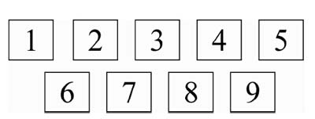
这个游戏三人以上就可以玩。游戏开始时，其中一套交给出数字片的人，其余三套打乱次序后，由另外几人轮着每次拿一张，到拿完为止。拿完后，由出数字片的人拿出一张数字片，放在桌上，大家就根据这张数字片的数字，把自己手里能凑成十的数字片都拿出来凑十。如出的数字片是“3”，大家就可以把“7”拿出来凑十，一人有两张以上“7”的数字片时，可以同时拿出来。谁的数字片先全部脱手就是优胜者。
这个游戏另一种做法，两人以上就可以玩。
用1~9的数字片六套共54张，打乱次序，一人拿一张依次轮流，到拿完为止。
各人把拿到的数字片两张两张地凑成10，如1、9，2、8，3、7，4、6，5、5。也可以三张凑成10，如1、2、7，2、3、5，…。看谁凑的10多，谁就是优胜者。
这个游戏可以两个人玩，也可以三个、四个人玩。
游戏材料是1~5数字片各12张，共60张，分成两套，每套是1~5数字片各6张，共30张。一套用红色厚纸做，一套用白色厚纸做。
做游戏时，把其中一套数字片打乱次序，放在桌面上排成一列或二三列长行（写有数字的一面向下）。如果两个人玩，用另一套数字片每人分给1~5数字片各三张，按1~5的顺序，先比加1，每人拿出1的数字片一张，任意放在选定排在桌面上一列（或二三列）长行数字片一张的下面，放好翻开数字片后相加。如图22：
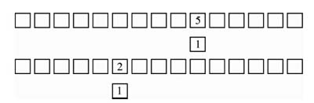
谁加起来的得数多，就是谁胜，胜的把自己与对方的数字片都收去。得数一样时，各收各的。这样，三张1的数字片比完，再比2的数字片，依次推下去，到5的数字片比完，看谁的数字片多，就算谁胜一盘。如果三个人玩，每人分给1~5的数字片各2张，照上法同样进行。
这种游戏，只要数字片加以变换，可以扩充为10以内减法，20以内进位加法和退位减法，100以内加、减、乘、除法。
如10以内的减法的游戏材料，可以制成6~10数字片各6张，在桌面上排成一列（或二三列）长行，另外制成1~5数字片各6张，分给参加游戏的人照上法进行游戏。
20以内进位加法的游戏材料（包括10以内的加法），可以制成1~10数字片各6张，平均分成两套，用一套在桌面上排成一列（或二三列）长行，另外一套如果三个人玩，每人分给1~10数字片各一张，共计10张；如果两个人玩，可留下10张。游戏方法与上述相同。
有两个圆圈，一里一外。两圆中心有一个小圆圈，已经填好数字“4”。每个圆圈上各有三个小圆圈，又和中心的小圆圈连成三条直线。如图23。现在要把1、2、3、5、6、7六个数字填入六个小圆圈内，使每个圆圈上的三个数或者每条直线上的三个数分别加起来，得数都是12。你能填写出来吗？
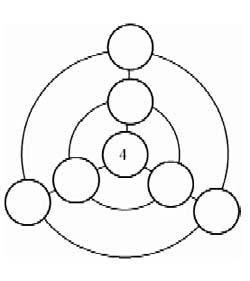
如果照图23换成填写2~8七个数字，两圆中心的小圆圈改填数字“5”，如第图24。要把其余六个数字填进去，使每个圆圈上的三个数或者每条直线上的三个数加起来，得数都是15；请你也填填看。
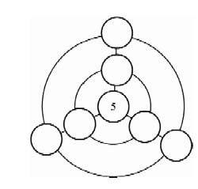
图23填写时应该这样思考：（1）每个圆圈里要填三个数，它们的和各为12，就要把1、2、3、5、6、7六个数分成和为12的1、5、6与2、3、7两组；（2）每条直线上的三个数，因为中心的数已经定为4，则其余两个数的和应为8，就要把上面六个数分成1、7，2、6和3、5，分别填入图23。
图24可以比照图23的方法进行填写，填后如图25、图26。
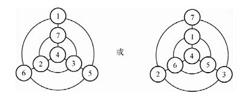
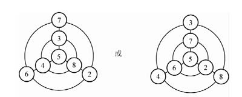
把下面图27所写的1、2、3、4、5、6、7、8八个数字及加减符号和等号，在图28拼排成头尾相接的四个算式。拼排方法如下：
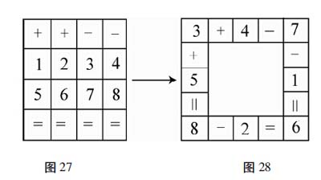
照上面的拼排方法，你能把下面各图中所给的八个数字及加减符号或加减乘除符号和等号，分别排出头尾相接的四个算式吗？试试看。
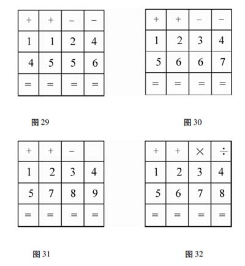
这个游戏要做好32块方纸片，分成两组，每组各16块，每组上面都写1~16各数，并排成下面两个方阵。
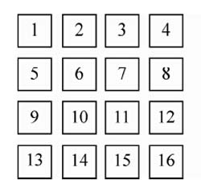
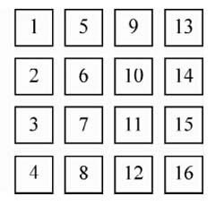
排好之后，请对方暗记一个数，说出在图33的第几横行里和图34的第几横行里，猜的人看了一看，就可以猜到。因为两图的排列，图33中1~16各数是挨次横排的，图34中1~16各数是挨次直排的。这种排法，只有1、6、11、16四个数，在横排和直排中，其挨次排列的次序相同，在方阵中的位置不变，其余各数，正好是位置相对称的两个数互换位置，这样便构成两图中每一横行比较，只有一个数相同。所以猜的时候，猜的人只要根据对方所说的在图33的哪一横行和图34的哪一横行，加以比较，就可以猜中对方所暗记的是什么数。
这种游戏，还可以照上法排成其他方阵来进行，如五五方阵、六六方阵、七七方阵等。五五方阵排成的两个方阵如图35、图36。
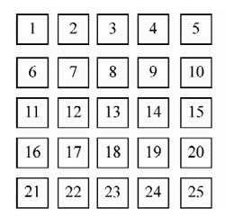
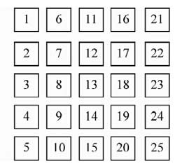
这个游戏进行时，猜的人在纸上画个钟面（也可画在黑板上），如图37。画好，向对方说明做游戏的方法。请对方想定几点钟，由猜的人用小棒在钟面上指钟点，每指一下钟点，对方须将想定的钟点数加1。如想定是5点钟的，猜的人任意指某一点钟，对方由5加1得6，再任意指一点，6加1得7，逐一加到20时对方喊停，猜的人所持的小棒即停。这时小捧所指的钟点就是对方原先想定的几点钟。
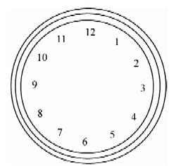
猜的人用小棒点钟面上的数字，开始七下可以乱点，第八下必须点在12上，第九下点在11上，以后依次由10、9、8、7、…点下去，到对方喊停时立即停止。
这样点钟面上的数字为什么能猜中呢？道理很简单。猜的人前七下乱点，第八下起按12、11、10、…逆时针方向顺次点，对方则在自己想定的钟点数上逐次加1。如果对方想定的是12点钟，猜的人第八下点到12，这时对方正加到20喊停，因为12加8恰是20；如对方想定的是11点钟，猜的人第九下点到11，对方喊停，这时11加9恰是20。这种游戏，实际上是运用了和是20的加法，对方想定的钟点数与猜的人在钟面上点的次数相加，正是12+8、11+9、10+10、9+11、8+12、7+13、6+14、5+15、4+16、3+17、2+18、1+19的几种组合。这就是必然猜中的道理。
做这个游戏时，大家围着坐。人数四人、五人、六人都可以，但七人不行。开始时从任何一人自1数起，右边的邻座接着数2，第三人数3，这样1、2、3、4、…顺次数下去，独有7字（7、17、27、37、…）和7的倍数（7、14、21、28、…）不准数。有7字的以拍手代替，7的倍数以跺脚代替。同时要注意的地方是：
（1）有人数错，就记着数错人的名字，重新从1另数；再错了，再记再数。最后就判别出好坏来了。
（2）应该拍手的不拍，或者应该跺脚的不跺，或者又做动作又报数的，都作错误论。
（3）有人数到的数目，是7，又是7的倍数，要同时拍手和跺脚各一下。
（4）要数得快，如果拖延时间过多，也视为错误。
这个游戏，两个人就可以做。第一人先说“1、2”，第二人连说“3”或“3、4”，第一人又接着说“5”或“5、6”，第二人又接下去说。谁先说到30，谁就得胜。
做这个游戏时，要注意下面三件事：
（1）不可连说三个数字；
（2）说的人要说得快，接下去说的人要接得快，不可停顿；
（3）每次说一个两个数目都可以，不受限制。
这个游戏有没有取胜的规律？有。诀窍在于掌握抢说了的倍数，如6，9，12，15，18，21，24等。如果轮到从26数起，这个人不可单说26一个数，一定要说26、27两个数。这样，接的人如果说一个数28，这个人就说29、30，接的人如果说28、29，这个人就说30，抢得30就稳操胜算了。假使轮到从27数起，一定要只说27一个数，切不可说27、28两个数，取胜的道理相同。
这个游戏以三个人为一组。游戏开始时，三个人可以围坐起来。
第一个人说“1、2”，第二个人就接着说“4、5”，第三个人再接着说“7、8”，又第一个人说“10、11”，照此说下去，不能说“3”、“6”、“9”三个数和它们的倍数。假如说了“3”、“6”、“9”和它们的倍数，就要这个人唱首歌，或者记载下来，到最后比谁胜谁负。没有说错或说错次数最少的为胜。
做这个游戏，有三点要注意的地方：
（1）每次不能连说三个数字。
（2）说得越快越好。
（3）谁先说要常调换。
下面九张正方形图38~图46中，分别写着从1~9分别乘以1、2、3、4、5、6、7、8、9的得数，但每个正方形中都缺少一个得数。
这个游戏两人以上就可以玩，参加的人数多，就更有趣味。游戏时，比谁先找出所缺少的那个得数。找出时要念出这个得数的乘法算式、口诀和得数。
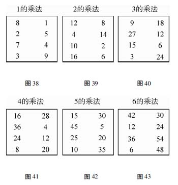
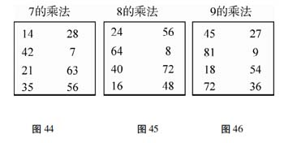
这个游戏，要先做好一套工具。
先拿20厘米宽、30厘米长的厚纸两张，上面各画成54格，如图47，一式两张。
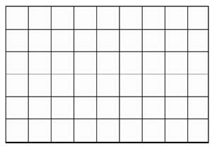
做好之后，就在这两张纸上一格一格地各填上两个数字，所填数目要分配得均匀一些，但两张必须相同，如图48。
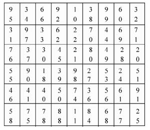
再做同样大小的厚纸三张，也各分成54格，对准上表每格的两个数字，把它们相乘所得的积写上（加、减、除用的可以仿编），做成一式三张，如图49：
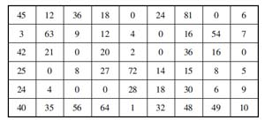
拿两张依着格子每张剪成54块，做成一式的两套，另外一张不必剪开，留作验算之用。
做游戏时，参加竞赛的两个人，各拿一张写着相乘数的表和一套写着乘积的方块纸，方块纸应任意打乱次序，然后两人相约说开始，立即分别把方块纸核对题目盖上。胜负的决定有两条规则：
（1）错得多的为败，快慢不论。
（2）两人都没有错，或错的题数相同，则快的为胜，慢的为败。
如果对格片及小方块多预备几套，就可以供比较多的人同时做这个竞赛游戏。
这个游戏要做好一套材料：用厚纸板做好大、小转盘各一个，上面各写1~10各数（如第50、图51）。又做核对得数用的盘10个，上面写转盘各种变化计算出来的得数（如图53）。当里盘、外盘各为1时，得数盘上写2、4、6、8、10、12、14、16、18、20，并在盘的中心写1字；当里盘为2，外盘为1时，得数盘上写3、5、7、9、11、13、15、17、19、11，并在盘的中心写2字；当里盘为3，外盘为1时，得数盘上写4、6、8、10、12、14、16、18、10、12，并在盘的中心写3字；当里盘为4，外盘为1时，得数盘上写5、7、9、11、13、15、17、9、11、13，并在盘的中心写4字；当里盘为5，外盘为1时，得数盘上写6、8、10、12、14、16、8、10、12、14，并在盘的中心写5字；当里盘为6、外盘为1时，得数盘上写7、9、11、13、15、7、9、11、13、15，并在盘的中心写6字；当里盘为7，外盘为1时，得数盘上写8，10、12、14、6、8、10、12、14、16，并在盘的中心写7字；当里盘为8，外盘为1时，得数盘上写9，11、13，5、7、9，11、13、15、17，并在盘的中心写8字；当里盘为9、外盘为1时，得数盘上写10、12、4、6、8、10、12、14、16、18，并在盘的中心写9字；当里盘为10，外盘为1时，得数盘上写11、3、5、7、9、11、13、15、17、19，并在盘的中心写10字。这种得数盘在加法口算游戏时适用。乘法可以仿编。
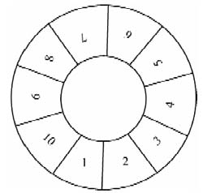
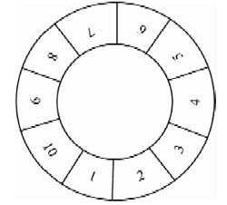
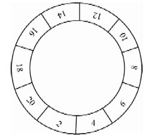
游戏时由一人为转盘人，其余的人参加口算。加法和乘法须先告诉大家，然后转盘人把小盘放在大盘上，中心用大头针钉好，先转大盘，再转小盘，小盘一停（如果大、小盘各格对得不准，可由转盘人移动对准），参加口算的人须以外盘1字的一格为起点，迅即将外盘与内盘相对的两数相加或相乘；向右一格一格地算过去，把算出的得数按顺序写下来。到相当时间，转盘人即以盘中对准外盘1的数相同的得数盘套上。这时由参加的人自己核对得数，以算得又多又快正确率高的为优胜。
这个游戏要先做好一套材料。这套材料是一寸见方的厚纸片42张，每张上面写一个数字，所写的数字是：1、2、3、4、5、6、7、8、9、10、12、14、15、16、18、20、21、24、25、27、28、30、32、35、36、40、42、45、48、49、50、54、56、60、63、64、70、72、80、81、90、100。
这个游戏可以二人到四人玩。方法是先在1~10各数内由大家决定一个基本数，然后把这些数字片打乱次序，每人一张一张地依次轮流拿数字片，如果二人玩，每人拿到21张，如果三人玩，每人拿到14张……拿完后由拿到基本数的人把数字片放出来，可以放基本数，也可以放其他数字片。如果基本数是3，第一个放出的数字片是15，站在第一人右边的为第二人，可以拿出15与3相加、减、乘或除的得数的数字片一张，如18、12、45、5等都可以接上去，接在那张数字片的上、下、左、右，由接的人自定。但须一边接，一边口述算式与得数，如有错误，这张数字片应收回放在自己面前的桌上，以后不准再用这张数字片来接。再第三、第四人依次接数字片，接时须与相邻的数字片相加、减、乘或除，不能超过一数进行计算。轮到接的人如果没有数字片可接，或者数字片可接因计算不出来而没有接，就由另一人去接。到最后大家都没有片子可接时，接完的或剩下片子最少的为优胜。
基本数是3，先放出的数字片是15的排列情况如图53：
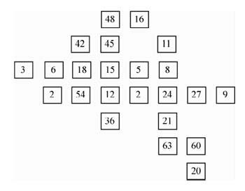
从一副扑克牌中抽出9张，使它们的点数分别是A、2、3、4、5、6、7、8、9，其中的A看成1点。能不能把这9张牌排成一个三角形，使它的每条边上都有4张牌，并且这4张牌的点数之和都是17？
答案是可以做到的，图54就是一种满足条件的排列方法。
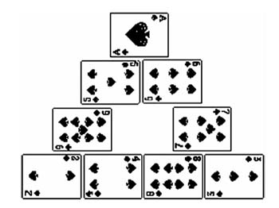
解答这个问题，不能全凭试验。做一点简单计算，可以大大加快解题速度。
三角形的每条边上有4张牌，3条边按理应该共有12张牌。实际上只用9张牌就要排出三角形，可见在三角形的3个顶点上应该各放一张，因为顶点上的牌在通过它的每条边上都计算一次，一张牌当两张用。
9张牌的点数相加，总和是1+2+3+4+5+6+7+8+9=45。
而要使三角形每条边上各数的和都是17，3条边上数目的总和就应该是17×3=51。
两个总和相减，得到51-45=6。
多出6点，是因为放在顶点上的3张牌各被重复计算一次，所以放在顶点位置的牌只能是A、2和3。
最后，把剩下的6张牌适当分配，就很容易得到所需要的排列方法，图54是其中的一种，图55是另外一种满足条件的排法。
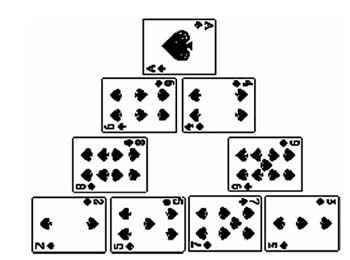
A组
1.移动1根火柴棍使等式成立：
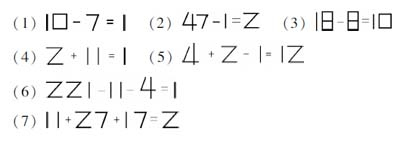
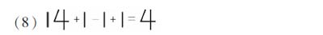
2.移动2根火柴棍使等式成立：
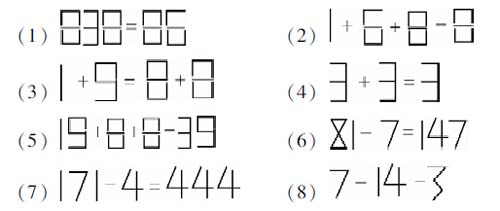
3.移动1根火柴使算式不等，但仍合理：
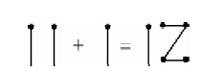
4.用7根火柴摆出一个最小的数。
B组
5.
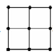
移动3根火柴，变“田”字为“品”字。5.
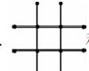
移动3根火柴，变“井”字为“品”字。7.用4根火柴棍摆出一个“田”字。
8.用3根火柴棍摆出一个最大的中国数字。
C组
9.移动2根火柴棍，使等式成立：
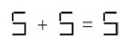
10.
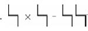
请你添上几根火柴，组成成立的算式（注： 表示4）。【答案】
A组：
1.（1）8-7=1，（2）4-1-1=2，（3）其中一根1稍移动一点，还是18-8=10，（4）12-11=1，（5）4+7+1=12，（6）22-11-4=7，（7）11+27-17=21，（8）114+1-111=4；
2.（1）83+3=86，（2）7+9-8=8，（3）7+8=6+9，（4）6-3=3，（5）18+8+8=34，（6）21×7=147，（7）111×4=444，（8）7=4+3；
3.11-1≠12或11+1≠17；4.111-11。
B组：
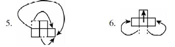
7.四根直立，头对齐，看缝，即为“田”字如图56所示。
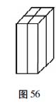
8.中国数字大写：千
C组：
9.6-3=3；
10.（1）5×9=45，（2）6×9=54，（3）6×8=48，（4）8×8=64（注：4、5、6、8、9这五个数字，可由 添上几根火柴得到）。